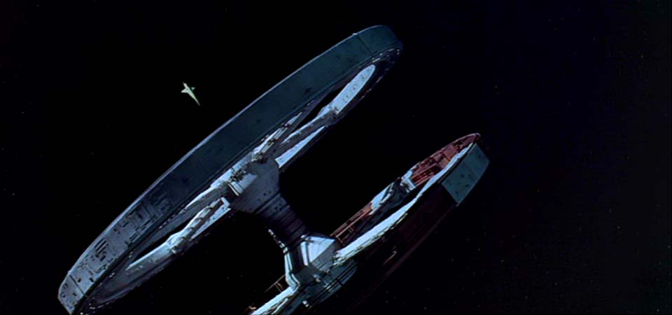
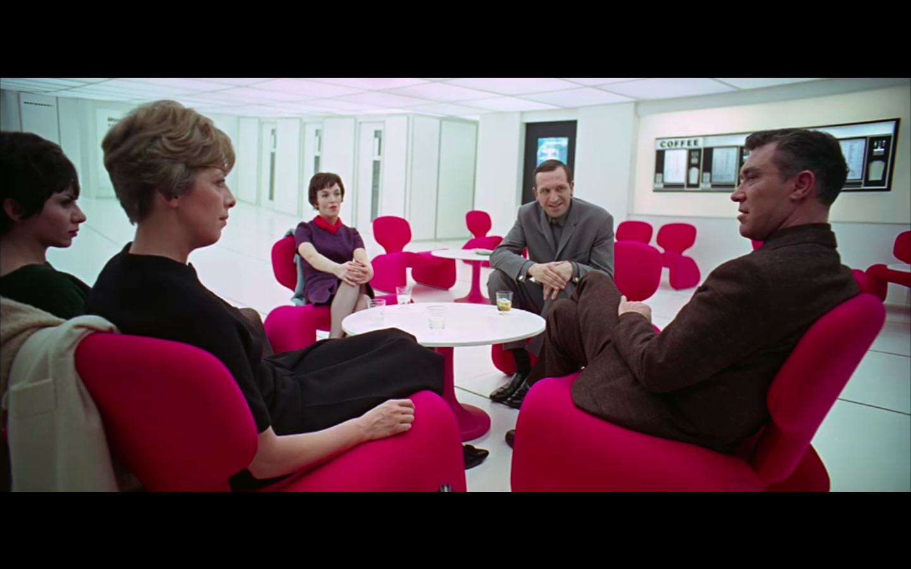

Ready to learn more?
Backgrounds from 2001, "Jupiter Mission"
2001's prediction of space travel
2001 was filmed at a pivotal moment in human history.
NASA had been laboring for years to beat the USSR
in the space race, and many of the people working
on 2001 were top scientists who kept up with all
the new, bleeding-edge technologies that NASA was
creating.



(continued...)
According to Rhodes, the reason why the film was so
good at predicting how we would live in the future
was due to these top scientists and research.
Kubrick did not just think of random things that
would be cool to add; he only included elements if
they were researched and verified to be realistic.
Due to this level of meticulousness, the film has
stood the test of time, influencing and predicting
future technological developments.
Images sourced from the movie 2001: A Space Odyssey or public domain repositories, such as NASA.
For educational purposes.